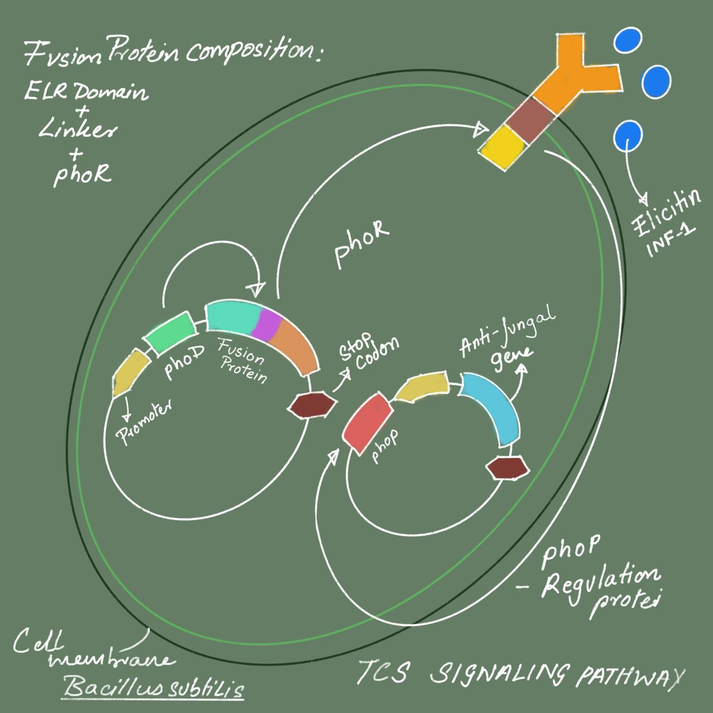
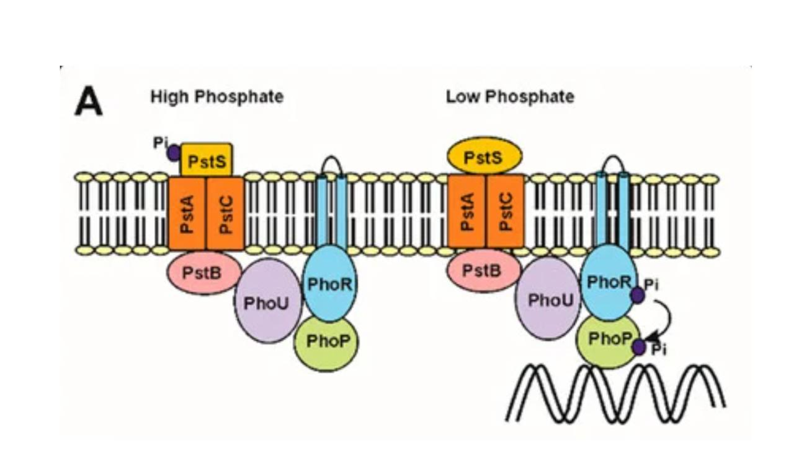
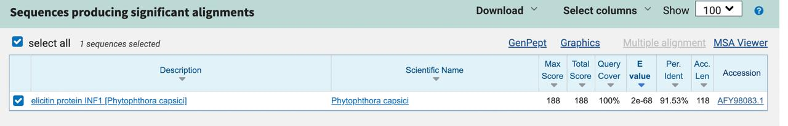

Introduction
The interaction between ELR (Elicitin Response Receptor) and INF1 from Phytophthora infestans plays a critical role in plant immune recognition, particularly in Solanum microdontum. The ELR receptor recognizes the INF1 elicitor protein produced by Phytophthora, triggering an immune response. This study explores a synthetic biology approach using a fusion protein system in Bacillus subtilis to detect and respond to the INF1 elicitor, potentially mitigating fungal infections in agricultural settings.
Background and Rationale
INF1 Elicitor Recognition
- INF1 proteins are secreted by Phytophthora species and recognized by plant receptors, triggering immune responses.
- The INF1 gene from Phytophthora capsici shares 91.53% identity with P. infestans INF1, supporting its role in cross-species immune interactions [1].

Two-Component Signaling System
- The PhoD, PhoR, and PhoP proteins regulate phosphate acquisition in bacteria.
- PhoR acts as a sensor kinase that detects phosphate limitations and autophosphorylates.
- PhoP is the response regulator that activates genes involved in phosphate metabolism, including antifungal biosynthesis.

Antifungal Compounds
General Antifungal Compounds
We began our research by looking at antifungal compounds produced by microbes. Some of the compounds we saw were: iturin, fengycins, pyrrolnitrin, and bacillomycin D. We later realized that all four of these are broad-spectrum antifungals.
Pyrrolnitrin is mainly produced by rhizospheric fluorescent or non-fluorescent pseudomonads, Serratia, and Burkholderia, which provide strong biological control against phytopathogenic fungi.
Iturin is a cyclic lipopeptide with an extensive range of antifungal activity, effectively targeting many fungal strains, including both frequently encountered and drug-resistant ones. However, there was no proof of its antifungal activity for P. capsici.
Surfactins are a class of cyclic lipopeptides produced by Bacillus spp. that possess many biological activities, such as surfactant, antibacterial, antifungal, and antitumor activities.
Fengycin is a biologically active lipopeptide produced by several Bacillus spp. strains. It develops antifungal activity predominantly against filamentous fungi and has hemolytic activity 40-fold lower than that of surfactin.
Specific Antifungals against P. capsici
Beta-1,3 glucanase: P. capsici has more beta 1,3 glucan in its cell wall than true fungi, which have more chitin. Using this enzyme would help degrade the cell wall, weakening the virulence of the fungi or leading to cell lysis.
2E,4E-Decadienoic Acid: Produced by a coculture of Bacillus subtilis and Trichoderma asperellum, this compound has an inhibition rate of 94.21 ± 0.37%. However, we lack literature confirming which among these two species produces this compound.
1H-pyrrole-2-carboxylic acid: This enzyme was produced by Streptomyces sp. and was proven to inhibit P. capsici along with other phytopathogenic fungi. However, no literature confirms any Bacillus species producing this enzyme.
Cellulose Synthase 3: The oomycete cell wall consists of cellulose and other β-glucans. In Phytophthora spp., cellulose represents 32–35% of the cell wall content. Silencing the whole CesA gene family in P. infestans using an RNA interference method previously caused a more than 50% reduction in cellulose content in the cell walls of silenced transformants and cell wall disruption of the infectious appressoria.
Rhamnolipid B: The glycolipid antibiotic Rhamnolipid B, isolated from Pseudomonas aeruginosa strain B5, was assessed for in vitro antifungal activity and in vivo control against phytophthora blight and anthracnose under glasshouse conditions. Rhamnolipid B showed antifungal activity against P. capsici due to a lytic effect on zoospores.
Proposed Synthetic Biology Approach
Our design integrates a fusion protein system combining ELR domain, PhoR, and a responsive antifungal expression module.

Fusion Protein Design
Components:
- Signal Peptide - Located at the N-terminal to ensure proper secretion. Derived from PhoD for effective membrane localization[5].
- ELR Receptor - Recognizes the INF1 elicitor from P. capsici. Serves as the extracellular domain for signal transduction.
- Linker Sequence - Provides flexibility between the receptor and PhoR to maintain structural integrity and function.
- PhoR Sensor Kinase - Detects the ELR-INF1 interaction and autophosphorylates. Replaces PhoD while ensuring regulatory function[2][3].
Synthetic Circuit Implementation
Bacillus subtilis is chosen as the bacterial chassis due to its natural phosphate-sensing pathway and antifungal properties.
The engineered system follows the sequence: Signal Peptide - ELR Receptor - Linker - PhoR
Upon INF1 binding, PhoR activates PhoP, triggering downstream antifungal gene expression.
Antifungal Response
PhoP regulates fengycin biosynthesis, a lipopeptide with antifungal activity.
The engineered B. subtilis enhances fengycin production under
phosphate-limiting conditions, promoting plant protection [4].
The final sequence involves: PhoP - Fengycin - Stop Codon
Fengycin and Surfactin Combination
Antifungal Activity
The antimicrobial metabolites synthesized by Bacillus spp. offer a promising substitute for chemical oomyceticides for controlling Phytophthora capsici in vegetables. HPTLC analysis of crude extracts from Bacillus amyloliquefaciens KX953161.1 identified fengycin and surfactin as the predominant lipopeptides. These compounds exhibited strong inhibitory effects on P. capsici, achieving 100% zoospore germination inhibition while also inducing encystment, germ tube malformation, and cellular degradation.
Combination Effects on P. infestans
Purified surfactin and fengycin B were tested for inhibition of P. infestans mycelial growth. When only surfactin was used at concentrations of 10 to 50μg/mL, there were no zones of inhibition observed, whereas fengycin B alone showed an increasing zone of inhibition with higher concentrations. This demonstrated that fengycin was the active antifungal component in the combination.
Natural Production in Bacillus Species
Bacillus velezensis and Bacillus licheniformis both produce surfactin and four fengycin homologues simultaneously. It has been observed that surfactins are mainly involved in inducing systemic resistance in plants, while fengycins primarily inhibit zoospores.
Conclusion
This synthetic biology solution leverages the ELR-INF1 immune recognition mechanism to activate a phosphate-responsive two-component system in Bacillus subtilis. By integrating phosphate signaling with antifungal biosynthesis, the engineered bacteria provide a novel biocontrol method against Phytophthora infections in crops.
References
[1]Z. Chen et al., “Convergent evolution of immune receptors underpins distinct elicitin recognition in closely related Solanaceous plants,” The Plant Cell, vol. 35, no. 4, pp. 1186–1201, Jan. 2023, doi: https://doi.org/10.1093/plcell/koad002.
[2]R. Gao and A. M. Stock, "Biological Insights from Structures of Two-Component Proteins," Annu. Rev. Microbiol., vol. 63, pp. 133-154, 2009, doi: 10.1146/annurev.micro.091208.073344.
[3]R. B. Bourret and J. S. Parkinson, "Evolution of Bacterial Chemotaxis and Two-Component Signal Transduction Systems," Annu. Rev. Microbiol., vol. 63, pp. 563-585, 2009, doi: 10.1146/annurev.micro.091208.073254.
[4]Q. GUO et al., “The PhoR/PhoP two-component system regulates fengycin production in Bacillus subtilis NCD-2 under low-phosphate conditions,” Journal of Integrative Agriculture, vol. 17, no. 1, pp. 149–157, Feb. 2018, doi: https://doi.org/10.1016/S2095-3119(17)61669-1.
[5]J. L. Beckwith and D. A. R. Matthews, "Protein Secretion and the Signal Peptide," in Bacterial Secretion Systems: Methods and Protocols, 2nd ed., B. R. Lamb et al., Ed. New York: Springer, 2020, pp. 1-23.
[6] Pawar, S., Chaudhari, A., Prabha, R., Shukla, R., & Singh, D. P. (2019). Microbial Pyrrolnitrin: Natural Metabolite with Immense Practical Utility. Biomolecules, 9(9), 443. https://doi.org/10.3390/biom9090443
[7] Yaraguppi, D. A., Bagewadi, Z. K., Patil, N. R., & Mantri, N. (2023). Iturin: A Promising Cyclic Lipopeptide with Diverse Applications. Biomolecules, 13(10), 1515. https://doi.org/10.3390/biom13101515
[8] Liu, L., Jin, X., Lu, X., Guo, L., Lu, P., Yu, H., & Lv, B. (2023). Mechanisms of Surfactin from Bacillus subtilis SF1 against Fusarium foetens: A Novel Pathogen Inducing Potato Wilt. Journal of fungi (Basel, Switzerland), 9(3), 367. https://doi.org/10.3390/jof9030367
[9] Deleu, M., Paquot, M., & Nylander, T. (2008). Effect of Fengycin, a Lipopeptide Produced by Bacillus subtilis, on Model Biomembranes. Biophysical Journal, 94(7), 2667–2679. https://doi.org/10.1529/biophysj.107.114090
[10] Nazeem, Puthiyaveetil & Raghavamenon, Achuthan & Devassy, Babu Thekkekara & Parab, Govind & Devaki, Girija & Keshavachandran, Raghunath & Ramasamy, Samiyappan. (2008). Expression of pathogenesis related proteins in black pepper (Piper nigrum L.) in relation to Phytophthora foot rot disease. Journal of Tropical Agriculture. 46.
[11] Egea, C., Dickinson, M. J., Candela, M., & Candela, M. E. (1999). beta-1,3-Glucanase isoenzymes and genes in resistant and susceptible pepper (Capsicum annuum) cultivars infected with Phytophthora capsici. Physiologia Plantarum, 107(3), 312–318. doi:10.1034/j.1399-3054.1999.100308.
[12] Zhang X, Li Q, Wang M, Ma S, Zheng Y, Li Y, Zhao D, Zhang C.2022.2E,4E-Decadienoic Acid, a Novel Anti-Oomycete Agent from Coculture of Bacillus subtilis and Trichoderma asperellum. Microbiol Spectr10:e01542-22.https://doi.org/10.1128/spectrum.01542-22
[13] He, H., Hao, X., Zhou, W., Shi, N., Feng, J., & Han, L. (2019). Identification of antimicrobial metabolites produced by a potential biocontrol Actinomycete strain A217. Journal of Applied Microbiology, 128(4), 1143–1152. https://doi.org/10.1111/jam.14548
[14] Pang, Z., McKee, L.S., Srivastava, V. et al. Analysis of a cellulose synthase catalytic subunit from the oomycete pathogen of crops Phytophthora capsici. Cellulose 27, 8551–8565 (2020). https://doi.org/10.1007/s10570-020-03362-9
[15] Mathias Blum, Hannes A. Gamper, Maya Waldner, Helge Sierotzki, Ulrich Gisi,
The cellulose synthase 3 (CesA3) gene of oomycetes: structure, phylogeny and influence on sensitivity to carboxylic acid amide (CAA) fungicides, Fungal Biology, Volume 116, Issue 4,2012, Pages 529-542, ISSN 1878-6146.
https://doi.org/10.1016/j.funbio.2012.02.003.
[16] Kim, B. S., Lee, J. Y., & Hwang, B. K. (2000). In vivo control and in vitro antifungal activity of rhamnolipid B, a glycolipid antibiotic, against Phytophthora capsici and Colletotrichum orbiculare. Pest Management Science, 56(12), 1029-1035. https://doi.org/10.1002/1526-4998(200012)56:12
[17] N. Ley-López, J. Basilio Heredia, C. San Martín-Hernández, J. R. Ibarra-Rodríguez, M. [Á. Angulo-Escalante, and R. S. García-Estrada, “Biosíntesis inducida de fengicina y surfactina en una cepa de Bacillus amyloliquefaciens con actividad oomiceticida sobre zoosporas de Phytophthora capsica,” Rev Argent Microbiol, vol. 54, no. 3, pp. 181–191, Jul. 2022, doi: 10.1016/j.ram.2022.03.002.
[18] Wang, Y., Zhang, C., Liang, J., Wang, L., Gao, W., Jiang, J., & Chang, R. (2020). Surfactin and fengycin B extracted from Bacillus pumilus W-7 provide protection against potato late blight via distinct and synergistic mechanisms. Applied Microbiology and Biotechnology. doi:10.1007/s00253-020-10773-y
[19]Armenova, N., Petrova, P., Gerginova, M., Krumova, E., Kaynarov, D., Velkova, L., … Petrov, K. (2024). Bacillus velezensis R22 inhibits the growth of multiple fungal phytopathogens by producing surfactin and four fengycin homologues. Biotechnology & Biotechnological Equipment, 38(1). https://doi.org/10.1080/13102818.2024.2313072
[20] Ongena, M., Jourdan, E., Adam, A., Paquot, M., Brans, A., Joris, B., … Thonart, P. (2007). Surfactin and fengycin lipopeptides of Bacillus subtilis as elicitors of induced systemic resistance in plants. Environmental Microbiology, 9(4), 1084–1090. doi:10.1111/j.1462-2920.2006.01202.x